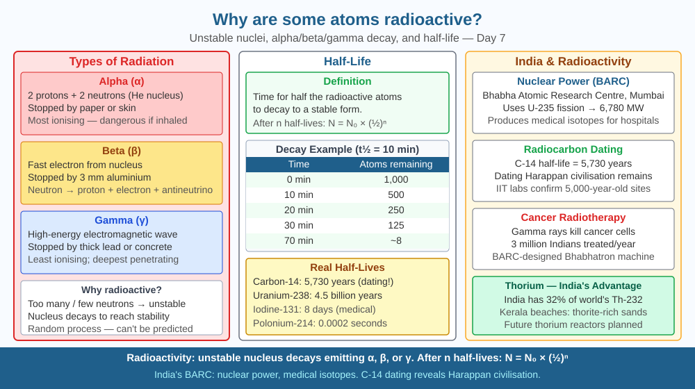

By the end of this lesson, you should be able to explain what causes radioactivity, describe alpha, beta, and gamma radiation, and predict what happens to an atom's stability as it loses neutrons.
Uranium ore left on a photographic plate exposes it even in the dark. Marie Curie discovered radium glows, heats its surroundings, and causes radiation burns — without any obvious energy source. What is driving this invisible energy release?
Radioactivity: When a nucleus has too many or too few neutrons relative to protons, the strong nuclear force cannot hold it together stably. The nucleus spontaneously emits radiation to reach a more stable configuration.
Types of radiation: - Alpha (α): Helium nucleus (2p + 2n). Stopped by paper or skin. Dangerous if inhaled. - Beta (β): Fast electron or positron from nucleus. Stopped by aluminium foil. Penetrates skin. - Gamma (γ): High-energy electromagnetic wave. Stopped by thick lead or concrete. Most penetrating.
Half-life: Time for half the radioactive atoms in a sample to decay. Uranium-238: 4.5 billion years. Carbon-14: 5,730 years. Iodine-131: 8 days. Polonium-218: 3 minutes. The decay rate is constant and unaffected by temperature, pressure, or chemistry.
Radioactive decay chain: Uranium-238 → (18 steps of alpha and beta decays) → Lead-206 (stable).
Nuclear equations: ²³⁸U → ²³⁴Th + ⁴He (alpha decay)
Think of nuclear stability as a see-saw balanced between protons and neutrons:
Half-life is the statistical tipping point: in any large sample, half the unstable nuclei will have decayed by the time one half-life passes, not because they all decay at once, but because each nucleus has a fixed probability of decaying per second — like flipping a coin that has a 50% chance per half-life of landing on "decay."
The SVG shows radioactive decay as a central diagram with three branching pathways and a half-life graph.
At the centre, an unstable nucleus is labelled with an excess-neutron indicator (N >> Z). Three arrows branch outward: the first (alpha decay, red) shows a helium-4 nucleus ejecting with the equation ²³⁸U → ²³⁴Th + ⁴He; the second (beta decay, orange) shows an electron ejecting from the nucleus as a neutron converts to a proton; the third (gamma decay, yellow) shows a wavy electromagnetic wave releasing from a nucleus that remains the same element but drops to a lower energy state. Each pathway is labelled with the penetration ability: alpha stopped by a sheet of paper, beta stopped by aluminium sheet, gamma requiring thick lead. In the bottom right, a half-life graph plots sample mass (y-axis) against time in multiples of half-life (x-axis), showing the exponential curve dropping 50% each interval, with ¹⁴C labelled at 5,730 years.

India has the world's largest thorium reserves (~25% of global deposits, primarily in Kerala's monazite sands). BARC's thorium-based nuclear programme aims to power India with domestic fuel through a three-stage reactor plan. Nuclear medicine at AIIMS: I-131 treats thyroid cancer, Tc-99m images bones, Y-90 treats liver cancer. Radiation therapy is the primary treatment for 60% of India's 1.5 million annual cancer cases. India's Nuclear Power Corporation operates 22 reactors using controlled fission chain reactions.
Radiocarbon dating (using C-14's 5,730-year half-life) has been used by the Archaeological Survey of India to date ancient sites including Mohenjo-daro artefacts and charcoal from early Vedic settlements. The precise, predictable decay rate of C-14 makes it a reliable clock across timescales from hundreds to about 50,000 years — a direct application of the half-life concept.
Carbon-14 dating thought experiment: A dead tree has C-14 that decays with half-life 5,730 years. After 5,730 years, half remains. After 11,460 years, one quarter remains. If a sample has 1/8 of its original C-14, it is 3 × 5,730 = 17,190 years old. Calculate how old a sample is if it has 1/16 of its original C-14. (Answer: 4 half-lives = 22,920 years.)
Now try the inverse: if an archaeologist finds charcoal with 1/32 of its original C-14, how many half-lives have passed and what is the age? Sketch the half-life curve on graph paper from 0 to 6 half-lives and mark the 1/32 point. (Answer: 5 half-lives = 28,650 years.)
The strong nuclear force holds protons together despite their mutual electrostatic repulsion. It is the strongest fundamental force, but only acts over distances of ~10⁻¹⁵ m (nuclear scale). For nuclei heavier than iron-56, adding more nucleons actually becomes energy-unfavourable — this is why elements heavier than uranium tend to be unstable and radioactive. The hunt for the "island of stability" — super-heavy elements with magic proton/neutron numbers that might be stable — is active at labs including JINR (Russia) and GSI (Germany).
Predict: Polonium-218 has a half-life of just 3 minutes. Uranium-238 has a half-life of 4.5 billion years. Both are radioactive. Using the neutron-to-proton balance model, predict whether polonium-218 or uranium-238 has a more severely imbalanced nucleus, and explain why a more imbalanced nucleus would have a shorter half-life.
What causes an atom to be radioactive?
Correct answer: A
Why is identifying the mechanism of radioactive decay more useful than just knowing it emits radiation?
Correct answer: B
If a radioactive isotope lost neutrons until its nucleus became stable, what would you predict?
Correct answer: B
A hospital uses Iodine-131 (half-life 8 days) to treat thyroid cancer. A patient receives a dose of 400 MBq (megabecquerels — a measure of radioactive decay events per second) on Day 0. Regulations require the patient to stay in an isolation room until the activity drops below 25 MBq to protect family members.
Calculate how many days the patient must remain in isolation. Show your work using the half-life decay sequence. Then explain why the doctor chose I-131 specifically for thyroid treatment — use your knowledge of how the thyroid gland concentrates iodine — and discuss one advantage and one risk of using a radioactive isotope with a short half-life versus a long one for medical treatment.
Marie Curie is the only person to have won Nobel Prizes in two different sciences — Physics (1903) and Chemistry (1911). She carried out most of her radioactivity research while pregnant and with two young daughters, in a shed with no proper ventilation, using her bare hands to handle radium. She kept a jar of radium on her bedside table because she found its glow beautiful. Her laboratory notebooks are still so radioactive that they are stored in lead-lined boxes in Paris and visitors must sign a waiver before handling them. She died in 1934 from aplastic anaemia — almost certainly caused by decades of radiation exposure from the very element she discovered.
Radioactivity is a nucleus correcting an imbalance between protons and neutrons — it emits particles or energy to reach stability, and the rate of that correction (half-life) is fixed by physics, not chemistry or temperature.